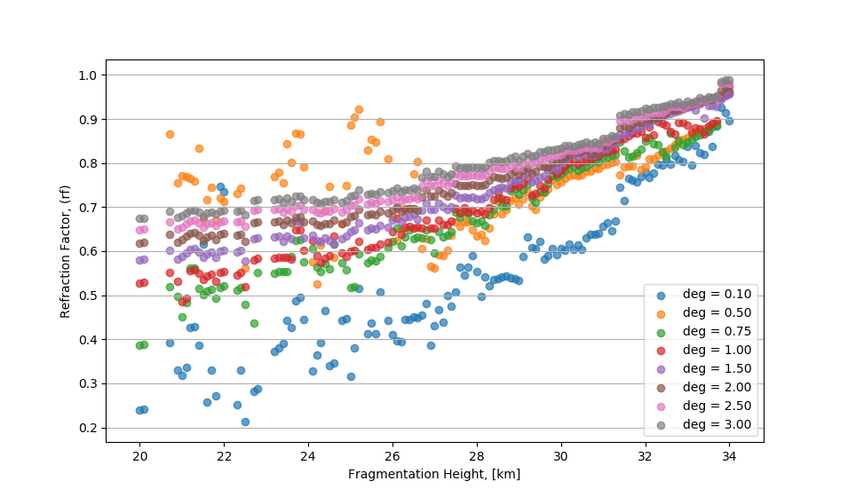

Theory
Overview
Infrasonics is the study of sound waves, infrasound, with a frequency below the range of human hearing, from 20 Hz down to the order of \(10^{-3}\). This is analogous to how infrared is light with a frequency below the wavelength visible to humans. Low-frequency waves can be produced by volcanoes, earthquakes, avalanches, meteors, nuclear explosions, and from some large animals, such as whales, and are able to propagate far away from the source before dissipation, often further than audible sounds. Because of their long-range, infrasound can provide some information about its source that may be otherwise unobtainable.par When a meteor falls, it travels much faster than the speed of sound, and interacting with the atmosphere, creates a Mach cone. At speeds ranging from Mach 35 to Mach 240, the Mach cone will have a small angle, and can be effectively approximated as a line source. In this picture, the blast produces a cylindrical shock wave moving radially outward, which decays at long distances to infrasound.
Additionally, a meteor may also fragment during its flight releasing a quasi-spherical shock wave independent of the Mach cone. The optically luminous part of the meteor flight, termed the fireball, is the section of interest for this study. This lasts for a time on the order of seconds. Normally, the meteoroid does not reach the ground, unless the mass is sufficiently large and speed sufficiently low. Since the meteor is luminous for such a short time, and travels at hypersonic speeds, external forces such as gravity and winds, can be ignored and the trajectory can be approximated as a straight line.
The low-frequency sounds representing the shock wave decaying at long distances from the trajectory can be measured as infrasound on seismographs and infrasonic microphones, provided the amplitude of the waves is sufficient to be detected.
In previous works, the time of arrivals of a shock wave at infrasound and seismic stations was used to find fragmentation points, as well as the ballistic (or cylindrical) arrival. These are verified by other methods of observing the meteor, such as by optical instruments. Infrasound provides another way to observe bolides and may be used to estimate the fireball trajectory, fragmentation points, and energy deposition profile.
Sources
Ballistic vs. Fragmentation anaylsis
Ballistic
The launch angle of every ray from the ballistic source must be \(90^{\circ}\) from the trajectory. Defining the trajectory vector to be \(\vec{u} = [sin(\theta)sin(\phi), cos(\theta)sin(\phi), -cos(\phi)]\), where \(\theta\) is the azimuth angle and \(\phi\) is the zenith angle of the trajectory, and a ray leaving the trajectory as \(\vec{v} = [sin(\alpha)sin(\beta), cos(\alpha)sin(\beta), -cos(\beta)]\), where \(\alpha\) and \(\beta\) correspond to \(\theta\) and \(\phi\), then letting \(\alpha\) freely vary:
adding in a tolerance angle of \(\gamma\):
where:
It is possible that a \(\beta\) value might not exist for a given tolerance angle due to the geometry of the vectors, so these are ignored.
Attenuations
BAM provides analysis of three pressure wave attenuations which may be studied: Transmission Factor, Acoustic Attenuation, and Geometric Attenuation
Transmission Factor
The transmission factor is calculated as follows: (See KG85)
Acoustic Attenuation
The attenuation factor is calculated as follows: (See Latunde-Dada 2013)
Geometric Attenuation
The geometric factor is calculated as follows: (See Latunde-Dada 2013)
with \(1.5^{\circ}\) as a hardcoded value, still under investigation, but the difference in angles are shown here:
